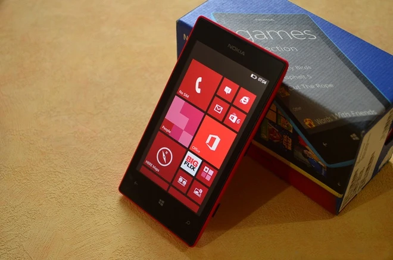

Chiếc điện thoại đầu tiên của tôi: Lumia 520
Trang này được tự động tạo lại bởi AI từ một bài viết ở Website cũ.
Hệ điều hành Windows Phone của Microsoft đã chính thức “về hưu” vào ngày 14/01/2020. Đây cũng là thời điểm mà Windows 7 huyền thoại lùi vào dĩ vãng để nhường chỗ cho những cái tên mới hơn. Những dòng máy Lumia, vốn được Nokia và sau này là Microsoft Mobile nhào nặn, sinh ra là để chạy riêng cho nền tảng này. Trong số đó, Lumia 520 không chỉ là mẫu máy phổ biến nhất mà còn là chiếc smartphone đầu tiên mở ra thế giới số đầy thú vị cho mình. Sau 10 năm, khi chiếc 520 cũ đã hỏng, mình quyết định tìm lại chút cảm giác xưa với chiếc Lumia 640 XL để xem “cụ giáo” này còn làm được gì giữa năm 2026 đầy rẫy AI này.

Chiếc Lumia 520 huyền thoại, gateway dẫn mình vào thế giới công nghệ
1. Tổng quan (Overview)
Chiếc smartphone đầu tay Nokia Lumia 520 luôn có một vị trí cực kỳ quan trọng trong hành trình vọc vạch công nghệ của mình. Mình vẫn nhớ như in cái cảm giác háo hức khi khui hộp em nó dưới cái nắng chiều, ngắm nghía lớp vỏ nhựa rực rỡ có thể thay thế dễ dàng. Dù là dòng máy giá rẻ nhưng cảm giác cầm nắm rất chắc tay, nhỏ gọn và tinh tế vô cùng.
Điểm khiến mình ấn tượng nhất chính là sự đơn giản đến thuần khiết. Giao diện Live Tiles trên Windows Phone 8.1 nhìn rất hiện đại, trực quan và không hề rối rắm như đống menu của các dòng máy bàn phím cứng mình từng dùng trước đó. Hiệu năng của máy thời điểm ấy cực kỳ mượt mà, đủ để đáp ứng mọi nhu cầu khám phá của một “lính mới”.
Dù camera chỉ có 5 MP và trông khá “cổ đại” so với tiêu chuẩn bây giờ, nhưng ngày đó nó là cả một bầu trời công nghệ. Chính nó đã giúp mình ghi lại những khoảnh khắc đời thường một cách dễ dàng nhất.

Nguồn: Internet
2. Thông số kỹ thuật (Specifications)
Sau một thập kỷ, trí nhớ của mình cũng có hạn nên mình đã phải nhờ “ông bạn” Google nhắc bài để tổng hợp lại bảng thông số này cho anh em tham khảo.
Chi tiết cấu hình Lumia 520
| Thông số | Chi tiết |
|---|---|
| Vi xử lý | Qualcomm Snapdragon S4 Plus MSM8227 (2 x 1 GHz) |
| Bộ nhớ (RAM) | 1 GB |
| Lưu trữ | 8 GB SSD |
| Pin | 1430 mAh |
3. Lumia 640 XL: Kẻ kế nhiệm từ quá khứ
Khi Windows Phone lùi vào dĩ vãng, mình tình cờ đọc được thông tin về dự án Windows 11 ARM chạy trên các thiết bị cũ, điều này làm mình nhớ ngay đến những chiếc Lumia. Với sự tò mò về số phận của một nền tảng từng thất bại nhưng đầy tiềm năng, mình đã tậu chiếc Lumia 640 XL để kiểm chứng khả năng sinh tồn của nó.
Cầm Lumia 640 XL so với những chiếc smartphone tràn viền hiện nay, cảm giác đầu tiên là sự chắc chắn đến lạ kỳ. Màn hình 5.7 inch dù độ phân giải không quá cao nhưng nhờ tấm nền IPS và công nghệ ClearBlack, màu sắc vẫn rất tách bạch, đặc biệt là màu đen sâu giúp các Live Tiles nổi bần bật.
Chi tiết cấu hình Lumia 640 XL
| Thông số | Chi tiết |
|---|---|
| Vi xử lý | Qualcomm Snapdragon 400 MSM8226/MSM8926 |
| Bộ nhớ (RAM) | 1 GB |
| Lưu trữ | 8 GB SSD |
| Pin | 3000 mAh |
Khả năng nhiếp ảnh với ống kính ZEISS
Điểm mình kỳ vọng nhất chính là cụm camera 13 MP dùng ống kính ZEISS. Trong điều kiện đủ sáng, ảnh cho ra có độ chi tiết và dải tương phản động (DR) khiến mình khá bất ngờ. Nó mang một chất màu rất riêng, không bị xử lý quá đà bởi AI như các dòng máy hiện nay.
4. “Sống sót” với hệ điều hành đã chết
Câu hỏi đặt ra là: Một chiếc máy chạy Windows 10 Mobile thì làm được gì vào năm 2026?
| Ứng dụng | Trạng thái năm 2026 |
|---|---|
| Trình duyệt | Monument Browser vẫn gánh tốt các trang tin tức nhẹ. |
| Nhắn tin | Unigram (Telegram client) là cứu cánh duy nhất để liên lạc. |
| Giải trí | Nghe nhạc offline qua thẻ nhớ vẫn là chân ái. |
Thực tế là hầu hết các ứng dụng phổ biến như Facebook hay YouTube đều đã ngừng hoạt động. Tuy nhiên, nhờ cộng đồng dev vẫn còn mặn mà, chúng ta có thể sử dụng các bản web wrapper hoặc ứng dụng bên thứ ba để duy trì các tính năng cơ bản nhất.
5. Dự án điên rồ: Windows 11 ARM trên Lumia
Đây mới là phần kịch tính nhất. Mình không thể để chiếc máy này yên vị với cái OS cũ kỹ. Mình đã thử nghiệm cài đặt dự án WOA (Windows on ARM) lên chiếc 640 XL này.
Cảm giác nhìn thấy nút Start của Windows 11 hiện lên trên một chiếc điện thoại từ năm 2015 thật sự rất khó tả. Dù máy chạy cực kỳ nóng và giật lag do giới hạn phần cứng, nhưng nó chứng minh một điều: Giới hạn của công nghệ chỉ nằm ở trí tưởng tượng của chúng ta thôi.
Kết luận
Hành trình từ Lumia 520 đến 640 XL không chỉ là việc đổi một chiếc điện thoại tốt hơn, mà là cách mình giữ lại kết nối với những kỷ niệm thời mới chập chững bước vào ngành Software Engineering.
Dù không thể dùng làm máy chính, nhưng mỗi khi cần một không gian yên tĩnh để tập trung hoặc đơn giản là muốn hoài niệm về thời kỳ “đồ đá” của smartphone, mình lại cầm chiếc Lumia này lên. Windows Phone có thể đã chết về mặt thương mại, nhưng linh hồn của nó vẫn sống mãi trong cộng đồng những người yêu công nghệ chân chính.
1020 từ
29-11-2024 23:35